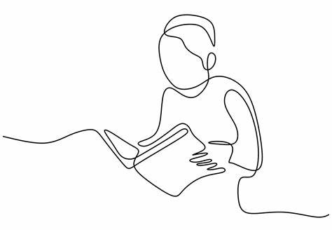

Educación
Ingeniería Informática - Fundación Universitaria Internacional de La Rioja. 2020
Cursos Destacados: Programación Orientada a objetos, Algoritmo y Estructura de Datos.
Graduada del Colegio Hermano Miguel 2007.
Conocimientos básicos en contabilidad y finanzas.
Tecnologo en Análisis y Desarrollo de Software. 2024
Materias relevantes: Desarrollo Web, Bases de Datos, Metodologías Agiles.
Bootcamp de Oracle. Participacion en el desarrollo de habiliades blandas y desarrollo para principiantes, adquisición de habiliades de comunicación efectiva, trabajo en equipo y resolución de problemas.